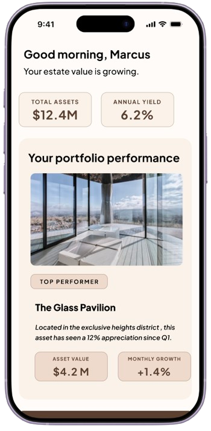
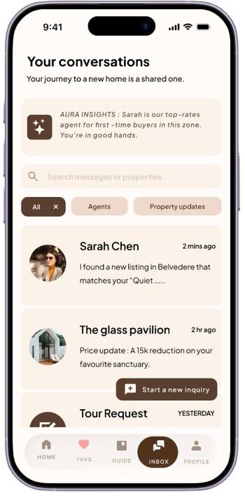
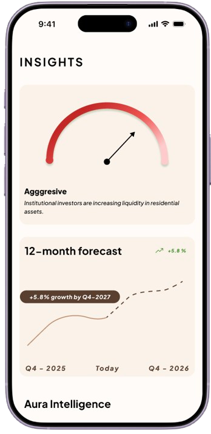

01
Problem
Case Study - Dual-Mode Real Estate
Aura Estate is a premium real estate experience built for two distinct high-intent personas: Marcus the investor and Maya the buyer. A single onboarding forks into fully separate modes, each with its own information architecture and decision support tools.
Two users with completely different goals required an architecture that never forces either into a generic flow.
Both personas pass through four stages, but what they seek and feel at each point diverges completely.
Common onboarding with a persona toggle leads to two entirely separate navigation structures.
High-fidelity screens designed in Figma covering both modes: investor dashboards, portfolio performance, Aura Intelligence insights, conversations, buyer discovery, and favourites.






A few selected screens — full screens and interactive prototype available on the Behance case study.
For complete case study click on the link: Aura Estate on Behance